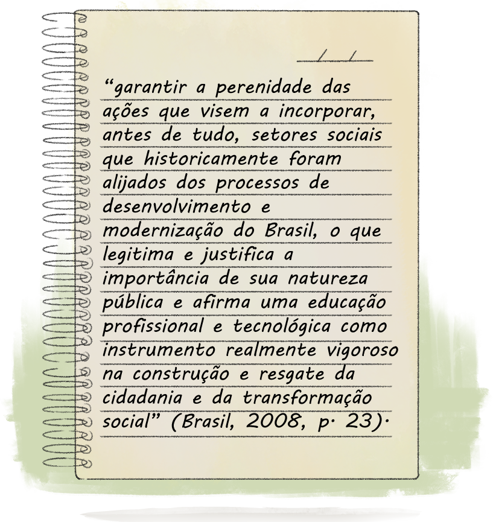

A construção do direito à diferença na educação brasileira
A luta pelo direito à diferença tem sua singularidade no campo da Educação Profissional e Tecnológica (EPT), que carrega em suas histórias o projeto de levar a educação escolar politécnica, tendo o trabalho como orientador da emancipação da classe trabalhadora, para lugares que, em geral, não têm oferta desta modalidade de educação.
No Brasil, desde o final da década de 1990, temos a implementação de políticas educacionais que tratam da diversidade. Apesar de haver múltiplas abordagens, é perceptível que, neste período, a temática passou a existir em diversos documentos, políticas e normativas oficiais. Na Lei de Diretrizes e Bases da Educação Nacional (LDBEN), Lei nº. 9.394 de dezembro 1996, foi constituído um capítulo específico para tratar sobre a Educação Especial, além de artigos direcionados à Educação Indígena. Em 1997, temos os Parâmetros Curriculares Nacionais (PCN) como marco, pois apresentaram a “pluralidade cultural” como tema transversal.
A partir de 2003, há uma expansão e uma reorientação de programas e projetos e uma maior articulação das políticas sobre diversidade no Ministério da Educação (MEC) a partir da implantação da, pelo Decreto Presidencial nº. 5.159, de 28 de julho de 2004, que gerou ações no âmbito da constituição de normativas, assim como no trabalho de formação e articulação com outros agentes da sociedade civil.
Entre esses marcos normativos, no início dos anos 2000, foram também implementados:
- Lei nº 10.639, de janeiro de 2003, que torna obrigatório o Ensino de História e Cultura Afro-Brasileira e Africana nas escolas;
- Diretrizes Curriculares Nacionais para a Educação das Relações Étnico-Raciais (Resolução nº 1, de 17/06/2004), instituídas pelo Conselho Nacional da Educação (CNE) para regulamentar a lei anterior;
- Lei nº 11.645, de março de 2008, que incorporou às discussões as Diretrizes Curriculares de Matriz Indígena;
- Decreto nº 5.296, de dezembro de 2004, referente ao atendimento das pessoas com deficiência;
- Decreto nº 5.626, de dezembro de 2005, que regulamenta a Língua Brasileira de Sinais (Libras).
Vale destacar, também, um conjunto de medidas que foram implementadas a partir das reivindicações de movimentos sociais e sindicatos que, ao longo da história de luta por direitos sociais, construíram propostas que vão se consolidando, em meio a disputas político-jurídicas, sob a forma de políticas públicas sociais.
.png)
Título: Políticas públicas sociais
Fonte: Divulgação – Gescom (2024); Schüler(2023c).
Elaboração: Prosa (2025g).
Você pode acessar os documentos citados aqui:
- Lei de Cotas (nº 12.711, de agosto de 2012.), atualizada pelo Decreto nº 12.536, de junho de 2025;
- Diretrizes Operacionais para Educação a Educação Básica das Escolas do Campo, de abril de 2002;
- Plano Nacional de Educação em Direitos Humanos, de 2003;
- Plano Nacional de Política para Mulheres, de 2004;
- Programa Brasil sem Homofobia, de 2004.
Na EPT, a constituição da defesa dos direitos civis e políticos começa a materializar-se no bojo desse movimento com o decreto nº 5.154, de julho de 2004, que possibilita a retomada do Projeto Político Pedagógico (PPP) de formação dos trabalhadores, baseado na educação politécnica e omnilateral. Além disso, a política de expansão e de democratização de acesso às vagas na EPT nas redes públicas pelo país passou a assegurar a entrada na instituição de sujeitos que estiveram à margem das políticas educacionais.
Assim, como consequência da construção de vários marcos legais e de uma política de educação para promoção dos direitos de diversos grupos que sofrem exclusão, a EPT dirige seu processo de ampliação para defesa do direito à educação das minorias. Nesse sentido, em 2008, é publicado um documento oficial sobre Concepções e Diretrizes da EPT, pelo qual se demarca o compromisso dos Institutos Federais em:

Título: Compromissos dos Institutos Federais
Fonte: Brasil (2008).
Elaboração: Prosa (2025h).
Além disso, em 2012, foram promulgadas as Diretrizes Curriculares Nacionais da Educação Profissional Técnica de Nível Médio (DCNEPTM), nas quais é indicada a necessidade do adequado tratamento das questões relativas à profissionalização de pessoas com deficiência, de comunidades quilombolas, moradoras do campo e indígenas, além das pessoas atendidas na Educação de Jovens e Adultos (EJA).
A possibilidade de pensar uma EPT que enxergue a formação pelo trabalho, talhada pelos modos plurais de existência humana, acentua a esperança de que homens e mulheres – em suas amplas possibilidades de manifestação de gênero, etnias e condições físicas e cognitivas – possam construir novas formas de relações sociais, políticas e existenciais através da apropriação do seu trabalho e, por ele, produzir experiências que fortaleçam suas identidades.
Mas será que toda essa legislação assegurou que todas as escolas, especialmente as instituições das Redes Estaduais e Federais de EPT, garantissem direitos aos jovens filhos da classe trabalhadora? Quantas escolas implementaram as Leis nº 10.639, de janeiro de 2003, e nº 11.645, de março de 2008, ? Quantas escolas estão adaptadas fisicamente e curricularmente para uma educação inclusiva? Quantas vezes pautamos o debate de gênero e sexualidade no cotidiano? Quais são as nossas diretrizes para atuar em situações de racismo?
Essas indagações nos apontam que não basta termos uma legislação ou uma intenção: é preciso materializar esses direitos nos diversos campos de atuação da sociedade. Entre eles, estão a educação e o trabalho, que são espaços privilegiados para isso, posto que é por meio destes que as subjetividades e as existências humanas se constituem. A educação tem a potencialidade de construir uma cultura em defesa dos direitos, da diversidade e da justiça social.
No entanto, garantir esses direitos exige mais do que simplesmente impedir práticas excludentes. Como destaca Flávia Piovesan (2005, p. 49), a proibição da exclusão por si só não assegura a inclusão efetiva. Para alcançar a igualdade de fato, é necessário ir além da mera proibição, promovendo ações concretas que assegurem a participação plena de grupos historicamente submetidos a padrões persistentes de violência e discriminação.
A gestão que atua no campo da EPT se depara com inúmeros desafios cotidianos, entre eles, pensar a quem se destinam as ações desenvolvidas dentro de uma escola, sejam elas de caráter administrativo, financeiro ou pedagógico. Para quem é preciso assegurar o direito à educação e à uma formação humana plena? E como garantir que haja tratamento igual e que se respeitem as diferenças que constituem os sujeitos da diversidade?
Passa pelas mãos da gestão escolar o calendário, a administração de recursos, a agenda de formação continuada, entre outras coisas. Além disso, o gestor pode articular o coletivo da escola, a comunidade e diversas entidades civis em torno da garantia de direitos com o objetivo de fazer da diversidade pauta perene, definindo de que forma ela fará parte do cotidiano da escola.
Para refletir: marcadores da diversidade e seus desafios
Todos nós sabemos que a escola é um direito fundamental e que deve ser ofertada a todas as pessoas. Desse modo, qualquer sujeito, de qualquer etnia, gênero, credo, classe, capacidades, tem direito à educação e à escolarização. Se assim é, por que temos dificuldades em atender às diversas demandas inerentes às existências das pessoas na escola?
Alguém pode dizer que, para promover uma educação democrática e com direitos iguais a todos, sem criar privilégios, devemos ofertar condições iguais. Mas, com todas as diferenças que nos rodeiam, poderíamos todos caber na mesma caixa? Como a escola pode promover uma educação democrática tratando igualmente os diferentes? Afinal, somos todos iguais ou somos todos diferentes?
Diante desses questionamentos, observe na sua trajetória profissional de que maneira marcadores da diversidade que te atravessam colaboraram ou dificultaram sua chegada até aqui.
Faça um pequeno relato sobre os casos nos quais sua condição étnica, sua sexualidade e seu gênero, seus limites físicos ou síndromes (se for o caso) foram um obstáculo ignorado no seu trabalho. Aponte que condições diferenciadas seriam importantes para você desenvolver-se mais frente à diferença que carrega. Caso entenda que nenhuma de suas condições foram impeditivas, como elas colaboraram para você se desenvolver sem tantas barreiras? Ainda, caso entenda que não houve interferência no seu desenvolvimento profissional por conta de algum marcador de exclusão, relate: como você se sente quando percebe que alguém foi vitimado, interrompido, silenciado por conta de suas características?
Lembre-se de registrar suas reflexões no Memorial e/ou de seguir as orientações de seus tutores sobre essa atividade.